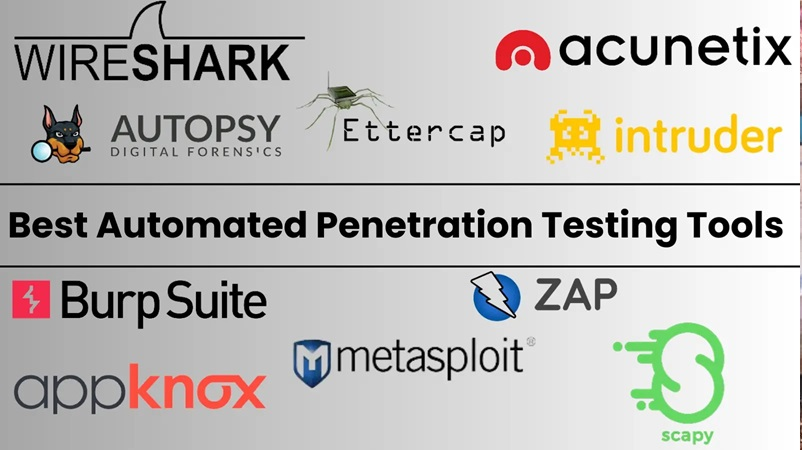

<div class="align-items-center default-container">
    <div class="col-lg-8">
        <div class="content">
            <div class="content-left">
                <h2 class="default-topic">About me.</h2>
                <p class="default-p">
                   Mi nombre es Rene Teran, y disfruto mucho <span class="default-highlight">entender como funciona, como desarrollar y como se pueden vulnerar las aplicaciones y sistemas informaticos </span>.
                </p>
                <p>
                    
                </p>
                <p class="default-p">
                   Soy un desarrollador y pentester de Ecuador. El espanol es mi lenguaje nativo, pero me desenvuelvo bastante bien con el idioma ingles. 
                </p>
                <p class="default-p">Mi interés por la computación, el desarrollo de software y el hacking ético comenzó a los 18 años. Siempre me llamó la atención cómo, a pesar de los altos estándares de calidad en el desarrollo de software, seguían ocurriendo ciberataques a gran escala. Me intrigaba entender cómo funcionaban esas brechas, quién las aprovechaba
                     y cómo podían prevenirse. 
                     Esa curiosidad me llevó a adentrarme de lleno en el mundo del  <span class="default-highlight">software y la 
                     </span>, 
                    <span class="default-highlight">ciberseguridad.</span>, and <span class="default-highlight">automatizacion</span>. 
                   El siguiente ano espero obtener mi certificación OSCP, que es un gran paso hacia mi objetivo de convertirme en un experto en ciberseguridad
                    <span class="default-highlight">y conseguir trabajo en una empresa A fin</span>.
                </p>
                <p class="default-p">
                   Actualmente estoy por finalizar mi carrera en Ingeniería de Software, pero a la par me he preparado de forma autodidacta y profesional en el campo de la ciberseguridad. He seguido cursos especializados, como la preparación para la certificación OSCP, así como formaciones en plataformas como LeetCode para fortalecer mis habilidades de programación. Durante mis prácticas preprofesionales, trabajé en el hardening de sistemas Linux, Windows y diversos dispositivos de red, afianzando mis conocimientos en seguridad defensiva.
                </p>
                <p class="default-p">
                    he realizado pruebas de penetración, desarrollado 
                    herramientas propias para escenarios de pentesting, 
                     Uno de los logros que más destaco es haber identificado vulnerabilidades en aplicaciones de organizaciones
                     —incluidas entidades públicas— que permitían la filtración de información sensible de 
                     ciudadanos y funcionarios.
                     A lo largo de mi trayectoria,he realizado , <span class="default-highlight">pruebas de penetración</span> and desarrollado 
                    <span class="default-highlight">herramientas propias para escenarios de pentesting</span>, e incluso he logrado evadir mecanismos de detección como antivirus en entornos de prueba. Uno de los logros que más destaco es haber identificado vulnerabilidades en aplicaciones de organizaciones
                     —incluidas entidades públicas— que permitían la filtración de información sensible de 
                    <span class="default-highlight">ciudadanos</span> y funcionarios por medio de <span class="default-highlight">REST APIs</span>, 
                    he colaborado en varios proyectos de software como, <span class="default-highlight">Paneles de administracion para documentos y personal de empresas</span>, 
                    <span class="default-highlight">crawlers</span>, además he participado en protectos en donde me encarg de recibir informacion y procesarla a partir de varias fuentes.
                </p>
            
                <p class="default-p">
                    Domino Python, el sistema operativo Linux y diversas herramientas de pentesting. Además de mis conocimientos técnicos, tengo sólidas habilidades de liderazgo, soy optimista y perseverante,
                     lo cual me ha ayudado a asumir retos complejos y trabajar en equipo para superarlos con compromiso y visión a largo plazo
                </p>
               
                <!-- <p class="default-p">
                    I have been involved in creating and managing <span class="default-highlight">PostgreSQL</span> 
                    databases, working on stream processing, and data pipelines. My work also involved handling secure authentication 
                    with <span class="default-highlight">OAuth2.0</span> and <span class="default-highlight">JWT</span>, 
                    as well as conducting User Acceptance Testing (UATs), performing manual testing, and writing user manual guides with  
                    <span class="default-highlight">LaTeX</span>. Furthermore, I developed end-to-end tests with 
                    <span class="default-highlight">Cypress</span> and assisted in monitoring applications using 
                    <span class="default-highlight">Prometheus</span>, <span class="default-highlight">Grafana</span>, 
                    and centralized logging systems.
                </p>
                <p class="default-p">
                    I have to tell you — I know you probably hear this a lot from other developers, but this much is true: 
                    my passion for technology goes far beyond work — <span class="default-highlight">I <em>am</em></span> 
                    the kind of person who finds joy in <span class="default-highlight">debugging tricky issues</span> 
                    and learning the intricacies of new frameworks just for fun. It's one of the reasons I pursued a 
                    Master's Degree — driven by sheer curiosity to <span class="default-highlight">turn the unknown into the known</span>.
                    I enjoy diving into documentation, 
                    exploring innovative solutions, and <span class="default-highlight">sharing knowledge</span> with my peers. 
                    Whether setting up a personal project to experiment with the latest tech stack or collaborating on a 
                    challenging problem, I'm motivated by curiosity and the thrill of continuous learning. This mindset fuels 
                    my technical growth and, I believe, helps contribute to a positive, dynamic team culture.
                </p>
                <p>
                    
                </p>
                <p class="default-p">
                    Now, we've covered the professional side. On a personal note, here are a few things about me: I'm passionate about  
                    <span class="default-highlight">documentaries</span>, <span class="default-highlight">purpose-driven organizations</span>,  
                    black coffee, captivating book stories, <span class="default-highlight">teamwork</span>,  
                    <span class="default-highlight">science fiction</span> and <span class="default-highlight">suspense</span> movies (they're the best!),  
                    pesto sauce, Linux, <span class="default-highlight">instrumental music</span>, physics and math, and the joy of community experiences. 
                    I wish I could tell you how much I love philosophy and the stories of explorers. When traveling, I enjoy documenting my 
                    <span class="default-highlight">whereabouts</span> and <span class="default-highlight">experiences</span>,  
                    so I can revisit them later.
                </p>                   
                <p class="default-p">
                    I am continuously learning and adapting to new technologies and methodologies. 
                    My goal is to create efficient, scalable, and user-friendly <span class="default-highlight">software solutions 
                    that make a difference</span>. Whether it's front-end development, back-end services, or full-stack applications, 
                    I am <span class="default-highlight">passionate about every aspect of software development</span>.
                </p>
                <p class="default-p">
                    Now that you've read this far, let me wrap this up with a final thought.
                </p>
                <p class="default-p">
                    Humankind is a species that constantly pushes the boundaries of technology. We are explorers at heart. 
                    I take great pleasure in contributing to our <span class="default-highlight">shared story</span> from the frontier of tech.
                </p> -->
            </div>
            <div class="content">
                <div class="content-left">
                    <h2 class="default-topic">Ponte en contacto.</h2>
                   <p class="default-p">
    Sígueme en las redes sociales, revisa mi cuenta de GitHub para ver proyectos, o <span class="default-highlight">contáctame para coordinar una reunión</span>.
    Estaré encantado de conversar sobre cómo mis <span class="default-highlight">habilidades para resolver problemas</span> pueden ayudar a afrontar los retos que estás enfrentando.
</p>
                    <button>
                        <a routerLink="/contact" class="a-green">
                            > Contactame
                        </a>
                    </button>
                </div>
            </div>
        </div>
    </div>
</div>
